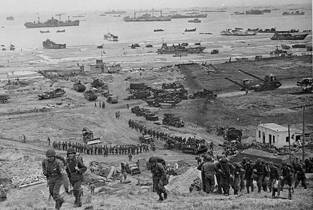
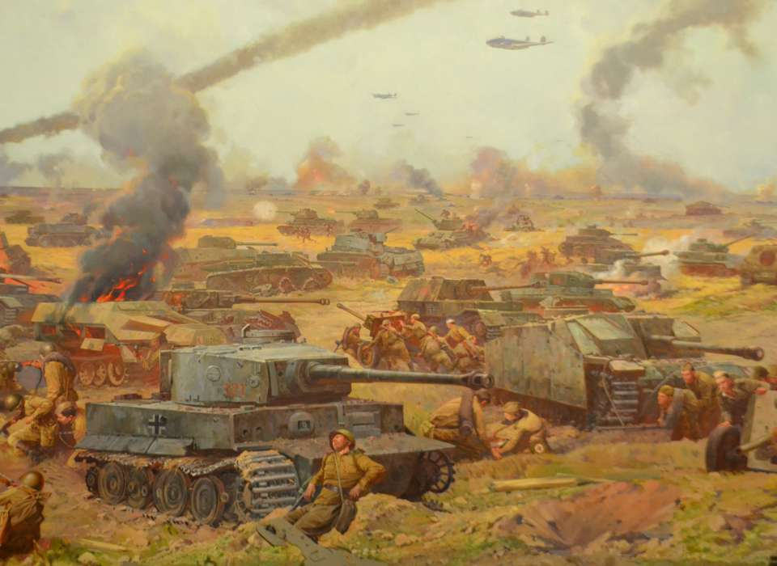
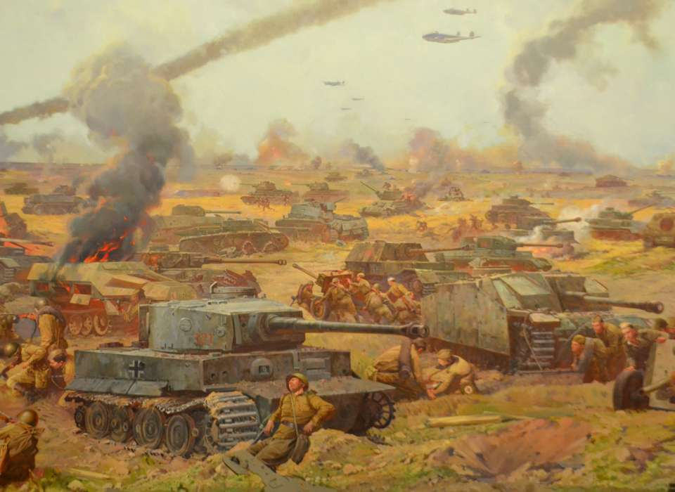
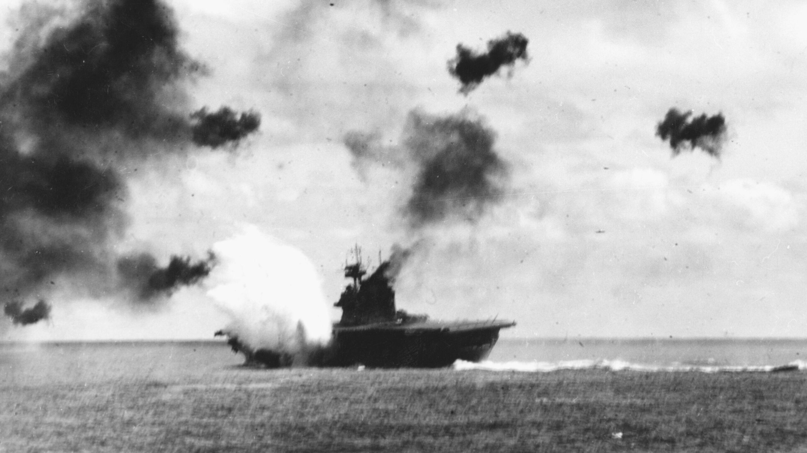

Important Battles and Military Innovations
World War II was defined by a series of important battles that not only determined the future of entire countries but also changed military strategies forever. One of the most known battles from World War II is the D-Day invasion that happened on June,6 ,1944 where the Allied forces charged the beaches of Normandy.This invasion required an incredible amount of coordination between all of the multinational forces and remains as an example of combined arms warfare to this day.
The European theater also saw many brutal battles especially on the Eastern Front. For example The Battle of Stalingrad which was known for intense urban battles and many casualties, slowed down the advancing Axis powers playing an important role in the outcome of the war.Another battle fought during the second world war that changed the outcome of the war and how we fight wars today was the battle of Kursk showing the use of tanks which was new at the time along with deep defensive strategies
 

Naval warfare was just as transformative during World War II. For example the Battle of Midway fought in the Pacific Theater is known as a turning point in the war. During the battle of Midway American navel forces along with intelligence, rapid response and deception were able to sink four four aircraft carriers belonging to Japan slowing the Axis power once again.
Even with all of these famous battles World War II had many small battles and military strategies that played a role in deciding the outcome of the war.With new tools like the improved radars, advanced artillery, along with the use of reconnaissance aircrafts that allowed commanders to make faster decisions while in battle
These new military technological innovations came at a very high price. Soldiers on both sides of the war had to experience very harsh conditions, difficult weather and tough battles. The lessons taught from battles have since been thoroughly studied in military academies all around the world. Many of today's doctrines and training methods can be traced all the way back to the strategies that were developed during World War II.